|
|
☰ 目录
20180814 在cloudflare 添加证书添加站点首先注册 Cloudflare 账号，注册成功之后，点击 add site，添加一个网站，在下图输入框中输入自己的域名，点击 Begin Scan 按钮开始扫描。 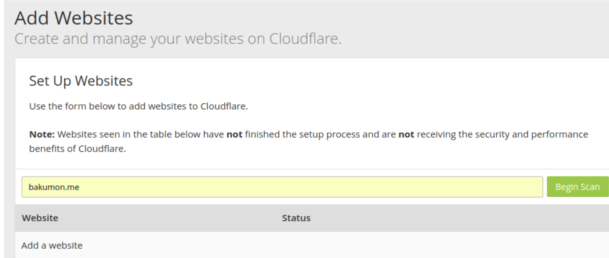 DNS 设置为cloudflare输入网址后，自动检测我现在的域名解析IP 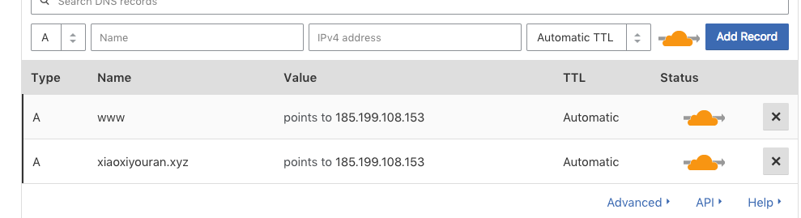 点击下一步，需要修改购买的域名服务器上的DNS 为 cloudflare: 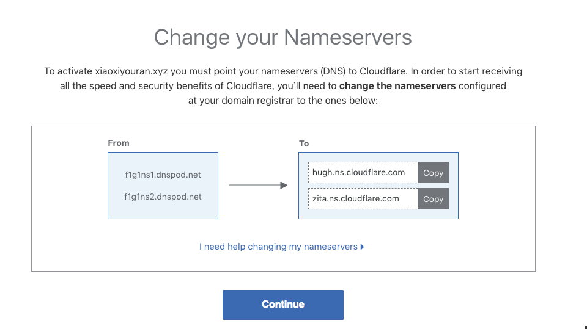 在腾讯云下点击 管理 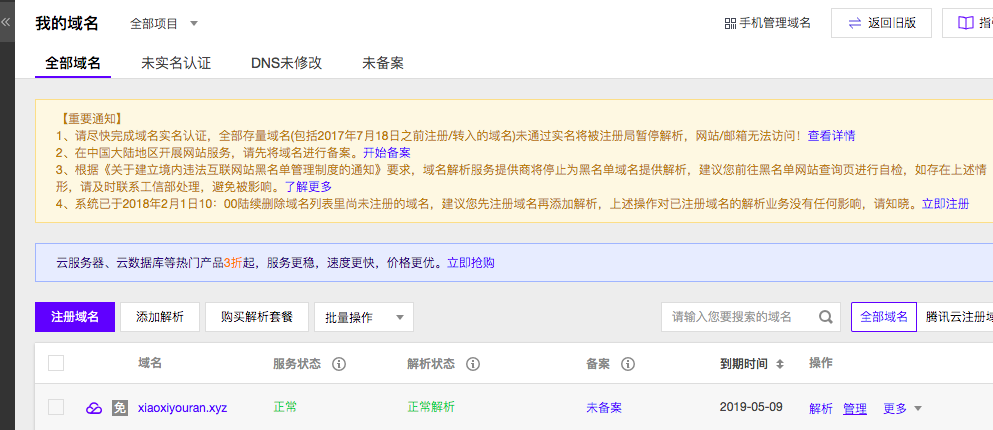 可以神奇的看到 cloudflare 检测到了我们的dns 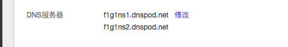 修改成 cloudflare 提供的dns即可，修改完后： 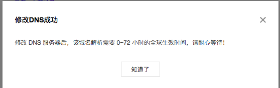 过了4-5分钟，cloudflare 会邮件通知，或看左上角 OVerview，发现状态变为 Active， 可以用了。 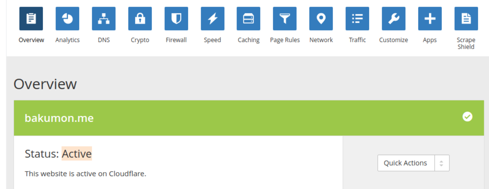 设置SSL选择 Crypto，修改状态为 full。 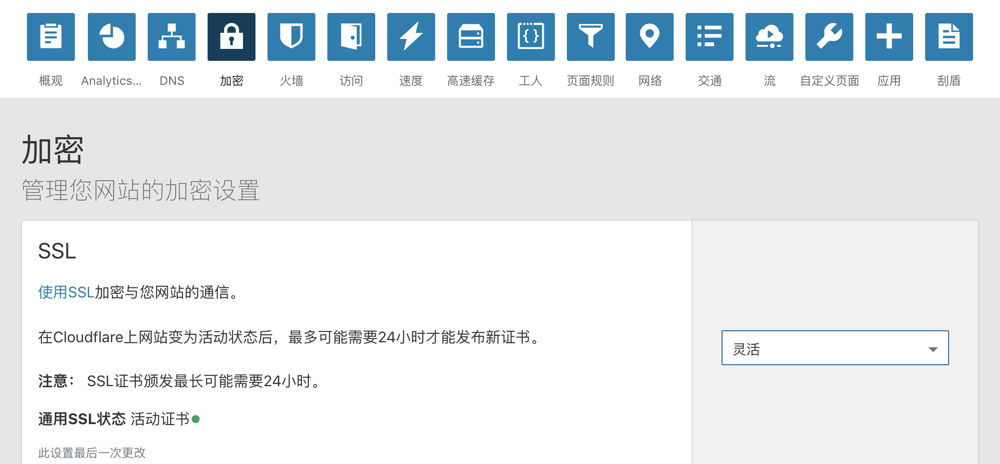 强制 https，选择 Page Rules，添加一条规则。让 http://www.xiaoxiyouran.xyz 的所有网页都跳转到 https。 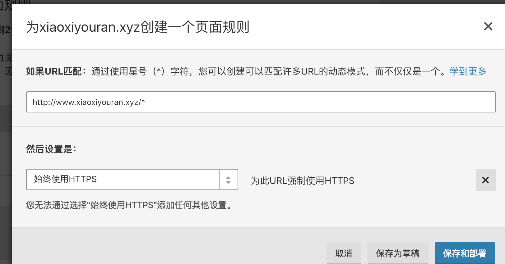 到这里访问 http://www.xiaoxiyouran.xyz 就可以成功看到小绿锁了。 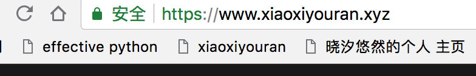 参考方法下面这种方式参考, 但是这种方式只是添加一个网址，如果下面的子网地址都想将 http 转成 https 呢？所以只1是一种参考。 点击 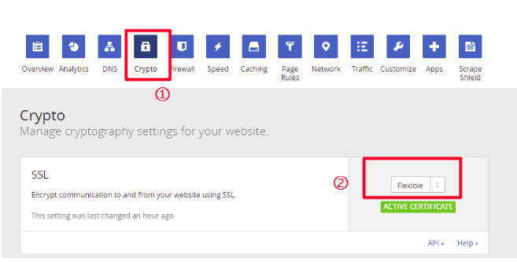 添加www重定向到https://xiaoxiyouran.xyz 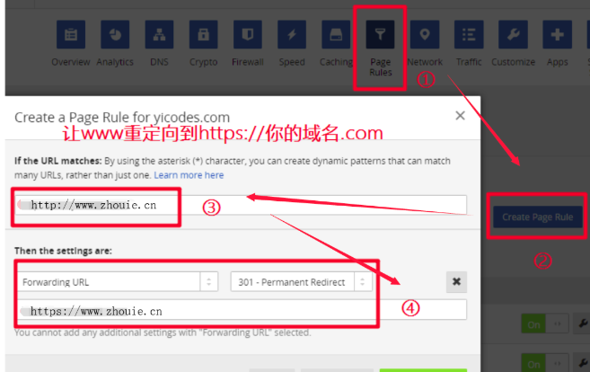 改完后的结果如下： 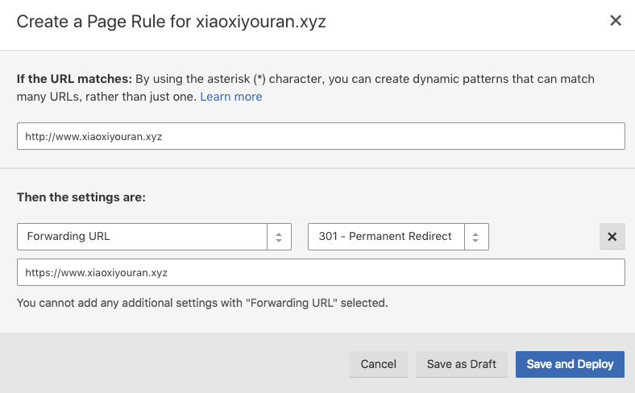 save 后的结果如下： 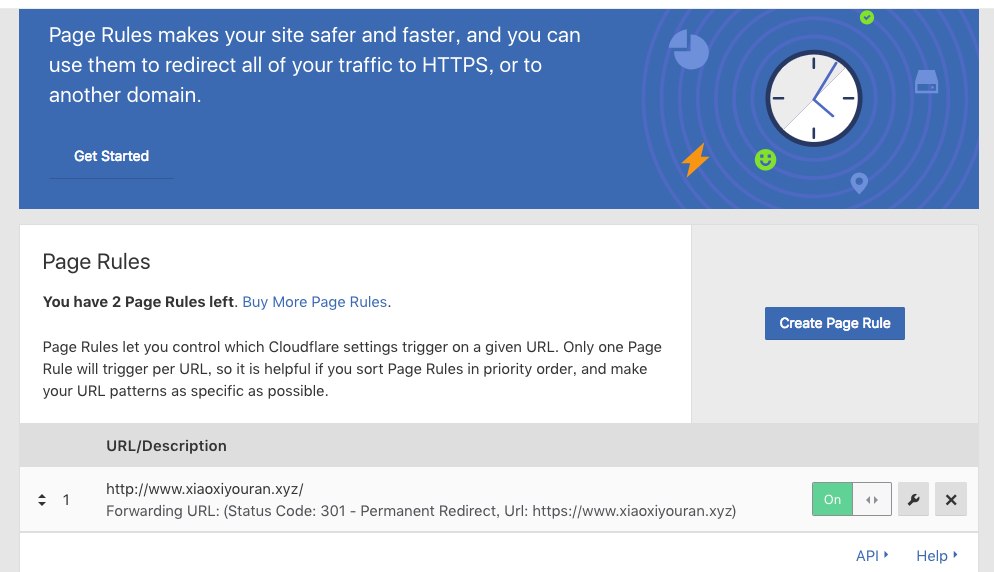 添加SSL的教程就此完成，一般需要5~30分钟生效！！！ |